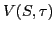
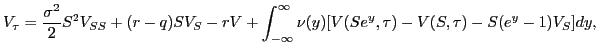

Recently, Levy process models for pricing options have become
popular in the financial literature. Based on the Black-Scholes
model, the option value of a contingent claim, ,
under the Levy process satisfies the following partial
integro-differential equation (PIDE):
|  |
Due to the singularity of , standard discretization methods may not achieve the usual accuracy. Moreover, the computation of the integral term can be very expensive. Recently, an implicit discretization method has been proposed that can obtain second order convergence for finite variation case and better than first order accuracy for infinite variation processes. In each time step, a linear system needs to be solved, which forms the bottle neck of the entire computation. A fixed point and a preconditioned BiCGSTAB iterations have been proposed. While they converge quite rapidly for mildly singular cases, the number of iterations grows significantly in the case of infinite variation when the mesh size decreases.
In this talk, we present a multigrid method for solving the PIDE. The multigrid method uses a fixed point iteration for smoothing. We prove by Fourier analysis that the smoother damps away the high frequencies. Linear interpolation and full weighting are used for intergrid transfer. Since it is too expensive to form the integral term explicitly, direct discretization is used for constructing the coarse grid matrices. However, it turns out that it is not as effective as the Galerkin course grid operators. We discuss how a combination of the two is used to form the coarse grid matrices. We demonstrate numerically the effectiveness of the multigrid method and show that the convergence rate is independent of the mesh size.